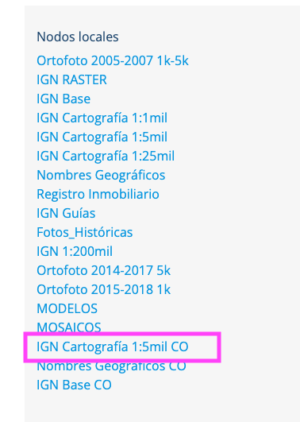
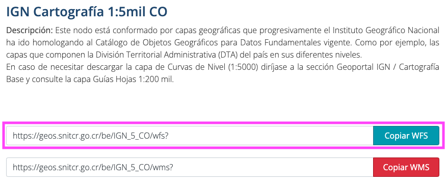
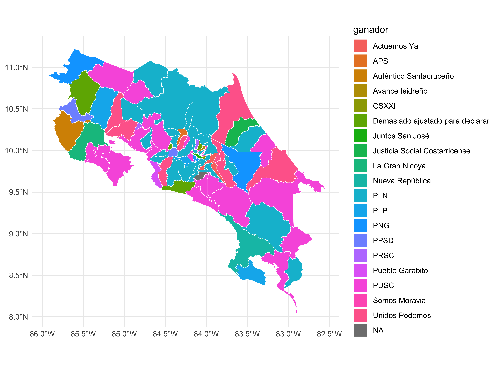
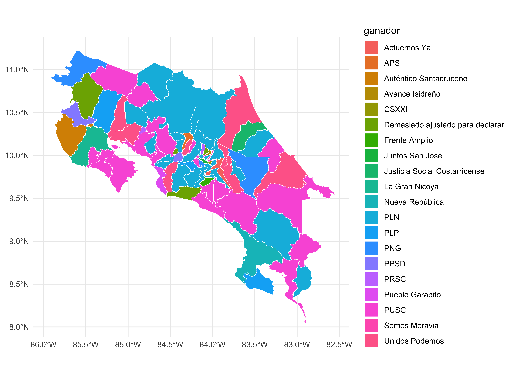
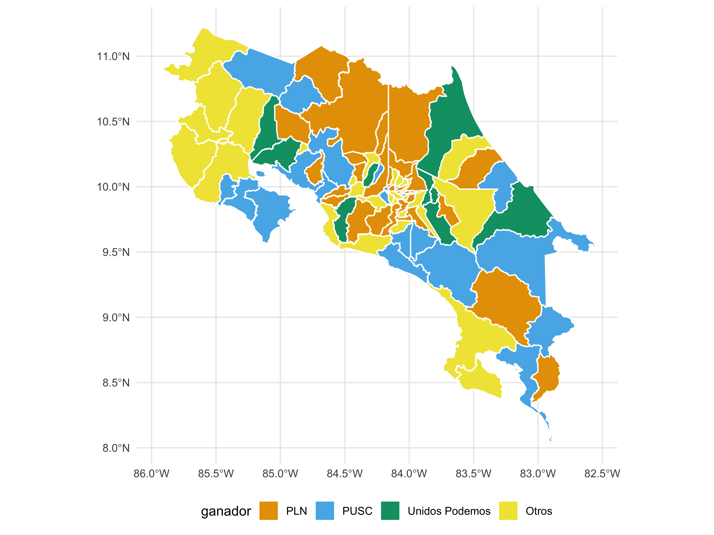

Actualizando el mapa de cantones de Costa Rica con R
A inicios de 2024 en Costa Rica, se realizaron elecciones municipales. Una vez publicados los resultados, tuve la idea de replicar un gráfico sencillo: un mapa con ggplot2 de los cantones de Costa Rica, y pintar en colores el partido político que ha ganado en cada una de las regiones. Para ahorrar tiempo hago una búsqueda rápida en google “shapefile cantones Costa Rica” al descargar los datos y ejecutar mi código, resulta que me hacen falta cantones. Después de un par de segundos de duda, recordé que en los últimos años se han creado nuevos cantones. Río Cuarto1 se separa del cantón de Grecia, Monteverde2 de Puntarenas, y uno para mi muy sonado, ya que está muy cerca de donde vivo, Puerto Jiménez3 se separa de Golfito y pasa a ser un cantón.
Si a esto le sumamos que algunos cantones han cambiado de nombre, Alfaro Ruiz ahora es conocido como Zarcero4, Valverde Vega se ha transformado en Sarchí5, y Aguirre ha pasado a llamarse Quepos6. En este punto, algo que creí serían 10 líneas de código, un problema de copiar y pegar, se convertía en algo más interesante. Así que en esta guia veremos cómo realizar un gráfico actualizado de los cantones de Costa Rica, utilizando como fuente de datos los servicios del Instituto Geográfico Nacional.
Obtener datos actualizados del IGN
Ante de comenzar
Verifica que tengas instalados los siguientes paquetes:
Si en Windows tienes errores al instalar alguno de los paquetes, quizás falte instalar Rtools. Descárgalo de este enlace y reinicia antes de intentar de nuevo.
Descargar datos del IGN
El Instituto Geográfico Nacional es la principal fuente de cartografía en Costa Rica, ofreciendo datos geoespaciales actualizados. Para obtener un shapefile específico para nuestro mapa, recurriremos al servicio WFS en R, enfocándonos en la división cantonal.
- Paso 1: Acceder al IGN
Visita la página de servicios OGC del IGN. En la sección de nodos locales, selecciona el servicio IGN Cartografía 1:5mil CO.

- Paso 2: Identificar la URL del Servicio WFS
A continuación, localizaremos la URL del servicio WFS que utilizaremos, tal como se muestra en la imagen adjunta.

- Paso 3: Identificar las capas disponibles
Mediante el uso del paquete ows4R en R, consultaremos los identificadores de las capas disponibles. Esto nos permitirá seleccionar y descargar la capa adecuada, ya sea a nivel de provincia, cantón o distrito.
bwk_client <- WFSClient$new(
url = url_wfs,
serviceVersion = "2.0.0"
)
as_tibble(bwk_client$getFeatureTypes(pretty = TRUE))# A tibble: 4 × 2
name title
<chr> <chr>
1 IGN_5_CO:curvas_5000_2017 Curvas de nivel cada 10 metros 1:5.000 año 2017 …
2 IGN_5_CO:limitedistrital_5k DTA (Límite Distrital)
3 IGN_5_CO:limitecantonal_5k Límite Cantonal
4 IGN_5_CO:limiteprovincial_5k Límite Provincial - Paso 4: Descargar los datos
Para descargar los cantones de Costa Rica, utilizaremos la capa denominada IGN_5_CO:limitecantonal_5k.
url <- url_parse(url_wfs)
url$query <- list(
service = "wfs",
request = "GetFeature",
typename = "IGN_5_CO:limitecantonal_5k",
srsName = "EPSG:4326"
)
request <- url_build(url)
regiones <- read_sf(request) |>
select(
"CÓDIGO_DE_PROVINCIA",
"PROVINCIA","CÓDIGO_CANTÓN","CANTÓN"
)
st_crs(regiones) <- st_crs(4326)Un agradecimiento a Manuel Eduardo Saavedra Núñez, quien, con un comentario en Facebook, nos hizo ver que el resultado de read_sf(request) contiene nombres de columnas duplicados. Por lo tanto, nos quedaremos desde el inicio solamente con las columnas que nos interesan.
Ahora, revisemos lo descargado: encontramos nombres de cantones, sus provincias correspondientes y SHAPE, el polígono que representa a cada cantón en el mapa.
Rows: 84
Columns: 5
$ CÓDIGO_DE_PROVINCIA <int> 1, 1, 1, 1, 1, 1, 1, 1, 1, 1, 1, 1, 1, 1, 1, 1, 1,…
$ PROVINCIA <chr> "San José", "San José", "San José", "San José", "S…
$ CÓDIGO_CANTÓN <int> 101, 102, 103, 104, 105, 106, 107, 108, 109, 110, …
$ CANTÓN <chr> "San José", "Escazú", "Desamparados", "Puriscal", …
$ SHAPE <MULTIPOLYGON [°]> MULTIPOLYGON (((-84.17302 9..., MULTI…Al mirar el peso del objeto regiones, notamos que es considerablemente grande. Esto se debe a que, para asegurar una cartografía precisa del país, el IGN emplea una precisión mucho mayor de la necesaria para la mayoría de los mapas que crearemos con ggplot2.
Para concluir este paso, crearemos un mapa con el paquete ggplot2, usando específicamente la geometría geom_sf().
- Paso 5: Simplificar el mapa
Dado que el mapa está formado por polígonos, podemos simplificar estos polígonos eliminando lados. Esto reduce la precisión, pero a la escala de un mapa común creado con ggplot2, será imperceptible. Sin embargo, lograremos reducir considerablemente el tamaño del objeto, facilitando el trabajo en equipos con recursos limitados.
- Paso 6: Guardar los datos localmente
Con los datos ya listos, procederemos a guardarlos localmente. Aunque es posible usar el formato shapefile o GeoJSON, en este caso optaremos por GeoJSON.
Recomiendo la lectura del post “Limitaciones e inconvenientes del shapefile” Leer más. ¡Gracias, Roberto, por tu excelente contenido!
- Paso 7: Leer archivos GeoJSON
Si después de un tiempo deseamos utilizar nuevamente los datos, podemos leerlos fácilmente con la función st_read() de la librería sf.
Graficar resultados de las elecciones municipales 2024
Ahora que contamos con el “lienzo” para dibujar nuestros datos, agregaremos al mapa los resultados electorales del pasado 4 de febrero. Lo primero será leer los datos almacenados en formato GeoJSON, seleccionando únicamente las columnas que nos interesan: provincia, canton y geometry.
Rows: 84
Columns: 5
$ codigo_de_provincia <int> 1, 1, 1, 1, 1, 1, 1, 1, 1, 1, 1, 1, 1, 1, 1, 1, 1,…
$ canton <chr> "San José", "Escazú", "Desamparados", "Puriscal", …
$ provincia <chr> "San José", "San José", "San José", "San José", "S…
$ codigo_canton <int> 101, 102, 103, 104, 105, 106, 107, 108, 109, 110, …
$ geometry <MULTIPOLYGON [°]> MULTIPOLYGON (((-84.15569 9..., MULTI…Rows: 84
Columns: 3
$ provincia <chr> "San José", "San José", "San José", "San José", "San José", …
$ canton <chr> "San José", "Escazú", "Desamparados", "Puriscal", "Tarrazú",…
$ geometry <MULTIPOLYGON [°]> MULTIPOLYGON (((-84.15569 9..., MULTIPOLYGON ((…Ahora vamos a leer los datos de los resultados electorales, enfocándonos en seleccionar solamente el nombre del cantón y el partido ganador en ese cantón. Afortunadamente, en Costa Rica los nombres de provincias y cantones son únicos y pueden servir como identificadores, una ventaja que no se extiende a los distritos.
resultados_tse <- read_csv(
file = "elecciones_municipales_2024.csv",
show_col_types = FALSE
) |>
clean_names() |>
select(canton, ganador)
glimpse(resultados_tse)Rows: 84
Columns: 2
$ canton <chr> "San José", "Escazú", "Desamparados", "Puriscal", "Tarrazú", "…
$ ganador <chr> "Juntos San José", "PNG", "PLN", "PLN", "PUSC", "PLN", "PLP", …Realizamos la unión de ambas tablas usando el nombre del cantón como clave y presentamos los resultados con ggplot2.
Rows: 84
Columns: 4
$ provincia <chr> "San José", "San José", "San José", "San José", "San José", …
$ canton <chr> "San José", "Escazú", "Desamparados", "Puriscal", "Tarrazú",…
$ ganador <chr> "Juntos San José", "PNG", "PLN", "PLN", "PUSC", "PLN", "PLP"…
$ geometry <MULTIPOLYGON [°]> MULTIPOLYGON (((-84.15569 9..., MULTIPOLYGON ((…
Buen intento, pero vemos un par de problemas: demasiadas etiquetas, colores muy similares y ese NA, ¿de dónde salió? Comencemos por ese NA; hagamos un filtro para ver cuál de los cantones tiene como ganador NA.
Simple feature collection with 1 feature and 3 fields
Geometry type: MULTIPOLYGON
Dimension: XY
Bounding box: xmin: -84.15433 ymin: 9.636876 xmax: -83.97105 ymax: 9.75103
Geodetic CRS: WGS 84
provincia canton ganador geometry
1 San José León Cortés Castro <NA> MULTIPOLYGON (((-83.98673 9...Vemos que es el cantón León Cortés Castro; en la gran mayoría de las ocasiones, esto se produce por dos razones: no hay datos para el cantón o en ambas tablas se usan nombres diferentes para el mismo cantón. Ya que estas son elecciones nacionales y participan todos los cantones, descartamos la primera opción, así que vamos a ver cómo aparece el nombre de León Cortés Castro en la tabla de resultados.
# A tibble: 1 × 2
canton ganador
<chr> <chr>
1 León Cortés Frente AmplioVemos que en la tabla de resultados se utiliza la forma “León Cortés”, una forma muy común de referirse al lugar pero no su nombre oficial. En este caso, modificaremos el nombre del cantón.
Ahora repetimos el gráfico y vemos que ya no tenemos valores ausentes.

Para términos del ejemplo, vamos a simplificar la cantidad de partidos políticos agrupando como “Otros” aquellos que no tengan como mínimo 5 alcaldías a nivel nacional.
library(ggokabeito)
ggplot(
data = mapa,
mapping = aes(
fill = ganador
)
) +
geom_sf(color = "white", linewidth = 0.5) +
scale_fill_okabe_ito() +
theme_minimal() +
theme(
legend.position = "bottom"
)
Listo, fueron muchos más pasos de los que creí inicialmente, pero espero que este ejemplo te pueda servir como referencia para mantener tus mapas actualizados. Resumen rápido:
- Se crean nuevos cantones.
- Los cantones cambian de nombre.
- Es preferible usar fuentes oficiales del estado y no de sitios web de terceros.
- Se debe tener cuidado con las faltas de ortografía o cambios de nombres al unir las tablas.
Obeservaciones finales
Ya terminado este post, me puse a pensar que realmente no tengo ningún criterio formado sobre el tema de los nuevos cantones. ¿Es bueno para la administración del país? Pues no tengo idea. Me dejé a mí mismo de tarea leer más sobre el tema y creo que todos los residentes del país deberíamos tomar un par de minutos para pensarlo.
Laura Fernández Delgado, ministra de planificación nacional y política económica, en un oficio a los diputados 20 de febrero de 2024, dice:
Las decisiones que tome la Asamblea Legislativa de creación de cantonatos pueden derivar en problemas de coordinación, de articulación y fragmentación del territorio; y adicionalmente, en ausencia de estudios técnicos y económicos pueden repercutir en una afectación a los ciudadanos habitantes de esos territorios derivada de la incapacidad para la prestación de los servicios públicos municipales por ausencia de sostenibilidad financiera, entre otros de estos nuevos cantones. 7
Justo el día anterior 19 de febrero del 2024, en primer debate se aprobó el expediente 22643 para la creación del cantón Colorado8 en Guanacaste y existen 6 proyectos de ley vigentes para crear nuevos cantones.
Expediente 24.062: Creación del Cantón de Cervantes, Cantón IX de la Provincia de Cartago.
Expediente 23.406: Creación del Cantón XVII de la Provincia de Alajuela, Peñas Blancas.
Expediente 23.403: Creación del Cantón Jicaral, Cantón XIV de la Provincia de Puntarenas.
Expediente 23.109: Creación del Cantón Cóbano.
Expediente 23.055: Creación del Cantón de Paquera, Cantón XIV de la Provincia de Puntarenas.
Expediente 22.874: Creación del Cantón Ojo de Agua, Cantón XVII de la Provincia de Alajuela.
Así que menos mal que ya sabemos cómo tener el mapa actualizado, porque si por la fecha se saca el día, lo vamos a tener que hacer con frecuencia en los próximos años.
Notas
Delfino.cr. (26 de abril de 2018). Expediente 20787: Reforma y Adiciones a la Ley N° 9440, Creación del Cantón XVI Río Cuarto de la Provincia de Alajuela, de 20 de Mayo de 2017. Delfino.cr. Leer más↩︎
Delfino.cr. (25 de septiembre de 2019). Expediente 21618: Creación del Cantón de Monteverde, Cantón XII de la Provincia de Puntarenas. Delfino.cr. Leer más↩︎
Delfino.cr. (21 de octubre de 2021). Expediente 22749: Creación del Cantón de Puerto Jiménez, Cantón XIII de la Provincia de Puntarenas. Delfino.cr. Leer más↩︎
República de Costa Rica. (16 de junio de 2010). Ley N° 8808: Declara oficial para efectos administrativos, la aprobación de la División Territorial Administrativa de la República N° 41548-MGP [Cambio de nombre del cantón de Alfaro Ruiz a Zarcero]. La Gaceta, N° 116. Leer más↩︎
Delfino.cr. (11 de febrero de 2015). Expediente 19469: Cambio de Denominación del Cantón XII, Valverde Vega, de la Provincia de Alajuela, para que en Adelante se Denomine Sarchí. Delfino.cr. Leer más↩︎
Presidencia de la República de Costa Rica. (11 de febrero de 2015). Cambio de nombre del Cantón VI de la provincia de Puntarenas para que en adelante se denomine Quepos. Recuperado de Leer más↩︎
San José, 20 de febrero del 2024 MIDEPLAN-DM-OF-0277-2024 A: Directorio Legislativo, Jefaturas de Fracción, Asamblea Legislativa de Costa Rica Asunto: Opinión de MIDEPLAN sobre el Primer Debate del Proyecto de Ley N°22.643, “Creación del Cantón Colorado, Cantón Duodécimo de la Provincia de Guanacaste”. Disponible en: enlace↩︎
Delfino.cr. (19 de febrero de 2024). Expediente 22643: Creación del Cantón Colorado, Cantón Duodécimo de la Provincia de Guanacaste. Delfino.cr. Leer más↩︎
Reutilización
Derechos de autor
Cómo citar
@online{aguero2024,
author = {Aguero, Carlos},
title = {Actualizando el mapa de cantones de Costa Rica con R},
date = {2024-02-08},
url = {https://aprendetidyverse.com/posts/001_mapa_cantones_cr.html},
langid = {es}
}